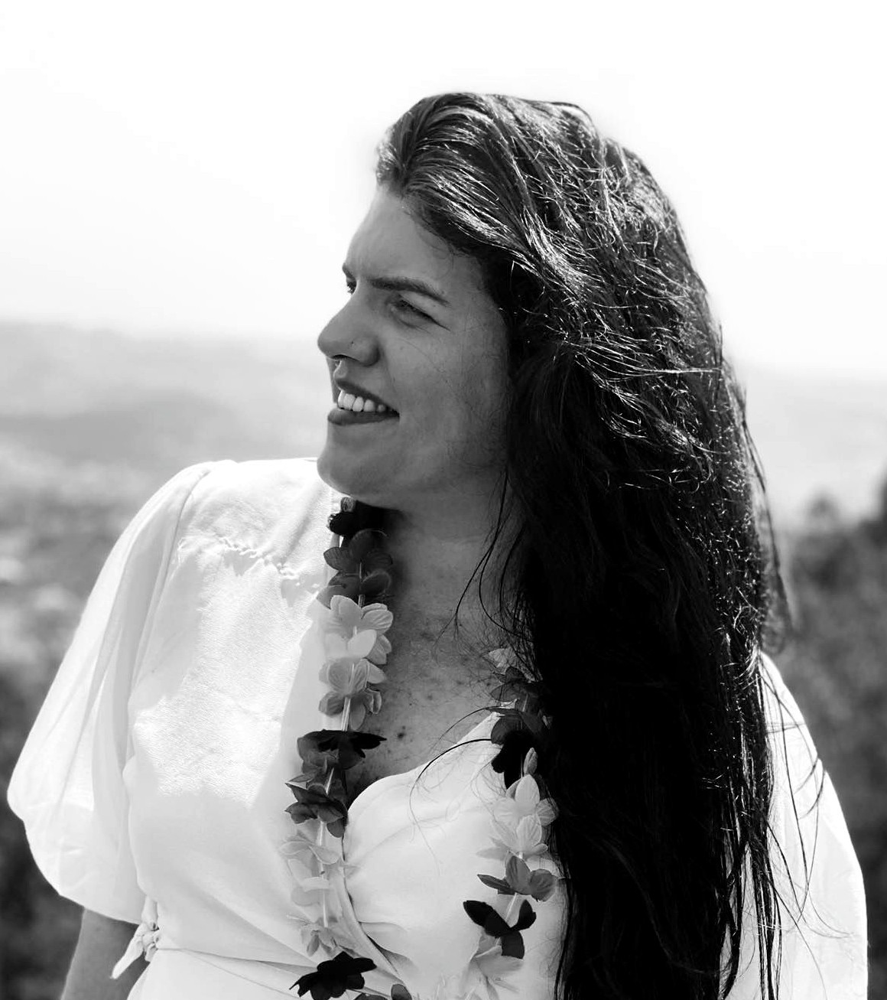

Maria Luísa Silva
Experiência Profissional
- 09/2023 – 04/2024: Housekeeping - Hotel Scuol, Suíça
- 02/2023 – 07/2024: Housekeeping - Engadina Booking, Scuol, Suíça
- 09/2022 - : Assistente de Loja / Vendedora - DIESEL
- 04/2022 – 08/2022: Consultora Imobiliária - RE/MAX
- 03/2019 – 10/2019: Consultora Imobiliária - KW Portugal
Formação Académica
- 12/2021: Licenciatura em Ciência Política e Relações Internacionais - Universidade Lusófona
- 2015–2017: Frequência de Licenciatura em Enfermagem - Escola Superior de Saúde da Cruz Vermelha Portuguesa
- 02/2016: Ensino Secundário – Línguas e Humanidades - Escola dos Mestres, Lisboa
Formação Complementar
- 2012–2014: Técnico Profissional de Design de Moda - Magestil, Lisboa
- 2017–2018: Curso de Estética, Unhas em Gel e Spa - Do It Better, Lisboa
- 2009–2010: Curso de Fotografia - ARCA, Escola de Artes de Coimbra
- 2024–2025: Formação Modular de Direito Internacional - IEFP
- 2025: MEO - Formação Call Center
Línguas e Competências Técnicas
- Idiomas: Português (Língua Materna), Inglês (Fluente), Espanhol (Intermédio), Italiano (Iniciante), Francês (Intermédio)
- Produtividade: Microsoft Office (Avançado), SPSS Statistics (Intermédio), Microsoft Teams (Avançado)
- Design: Canva (Avançado)
- Visualização de Dados: ggplot2 (Intermédio)